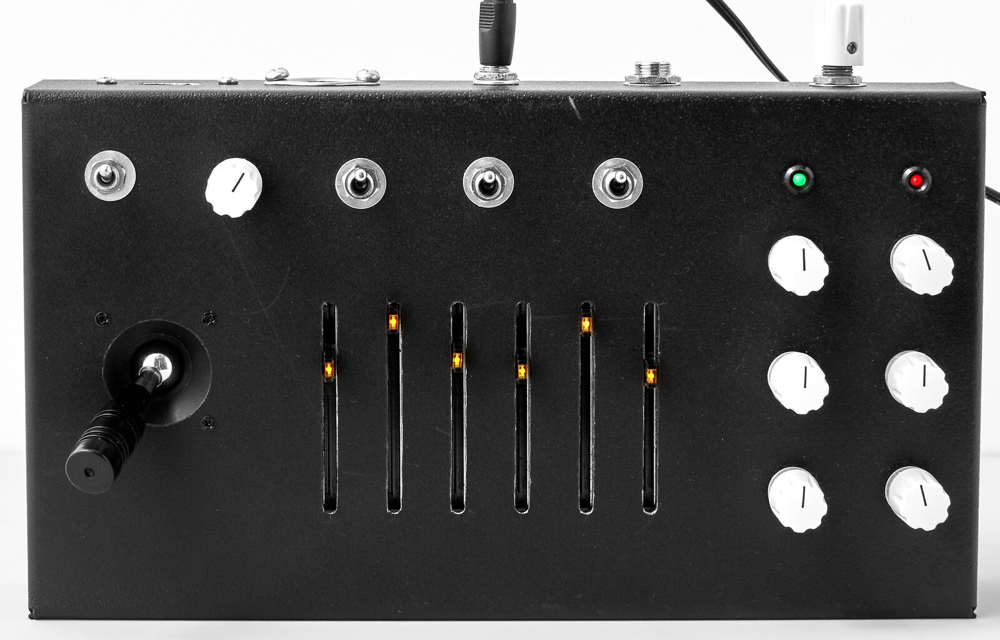
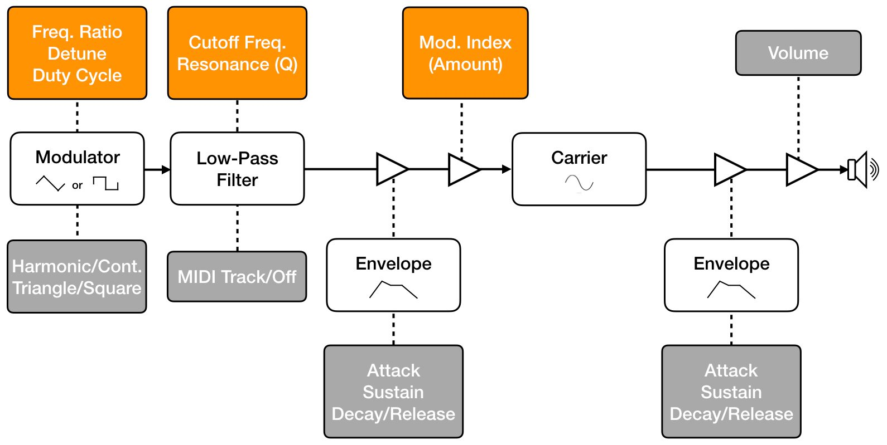
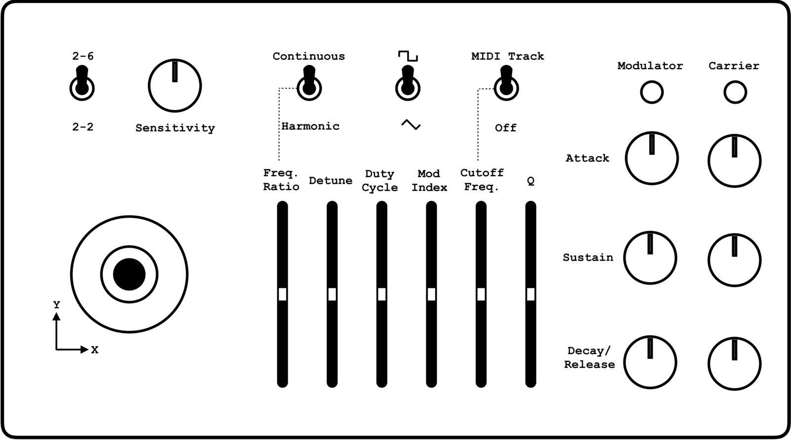
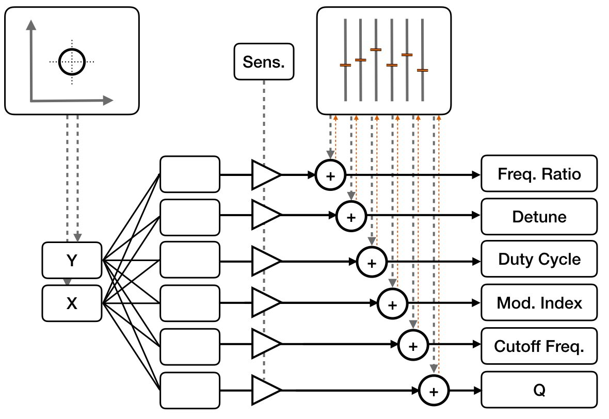
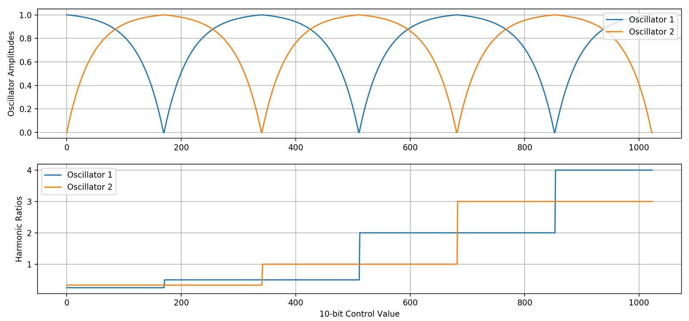

Evaluation of Timbre-Based Control of a Parametric Synthesizer
Abstract
Musical audio synthesis often requires systems-level knowledge and uniquely analytical approaches to music making, thus a number of machine learning systems have been proposed to replace traditional parameter spaces with more intuitive control spaces based on spatial arrangement of sonic qualities. Some prior evaluations of simplified control spaces have shown increased user efficacy via quantitative metrics in sound design tasks, and some indicate that simplification may lower barriers to entry to synthesis. However, the level and nature of the appeal of simplified interfaces to synthesists merits investigation, particularly in relation to the type of task, prior expertise, and aesthetic values. Toward addressing these unknowns, this work investigates user experience in a sample of 20 musicians with varying degrees of synthesis expertise, and uses a one-week, at-home, multi-task evaluation of a novel instrument presenting a simplified mode of control alongside the full parameter space. We find that our participants generally give primacy to parameter space and seek understanding of parameter-sound relationships, yet most do report finding some creative utility in timbre-space control for discovery of sounds, timbral transposition, and expressive modulations of parameters. Although we find some articulations of particular aesthetic values, relationships to user experience remain difficult to characterize generally.
Author Keywords
Timbre-based mapping
CCS Concepts
•Applied computing → Sound and music computing; Performing arts; •Human-centered computing → Interaction design;
Introduction
Digital Musical Instruments (DMIs) are often characterized by a virtual mapping layer which mediates interaction with sound-producing elements. Traditionally, parametric synthesizers have used one-to-one mappings of physical controls to parameters of an underlying synthesis model, which tasks synthesists with learning non-intuitive parameter-sound relationships rooted in signal processing concepts. This entails navigating a range of non-linear and non-monotonic relationships between parameter values and perceptual qualities, and understanding complex interdependencies between parameters, manifesting as confusing “dead spots” and elusive “sweet spots".
Perhaps because of these difficulties and the unusually analytic approaches required to exploit the full flexibility of most parametric synthesizers, they have often been the target of attempts at simplification and more intuitive modes of control. Evaluations often employ quantitative user efficacy metrics which run the risk of sacrificing generality for precision. With a few notable exceptions, little consideration has been given to the range of experience levels and musical aesthetic values among synthesists which are likely to affect preferences, uptake, and long-term engagement with analytical modes of interaction as opposed to simplified, holistic, or intuitive ones.
In particular, Rodger et. al. have argued that evaluation is best understood as an examination of musical ecologies comprising users as agents within cultural contexts, whose relationship to instruments is better understood in terms of observed processes than specific sets of behaviors intended by the designer [1]. Similarly, Morreale et. al have cautioned against a general view of access to music-making as a problem with technical solutions including simplified, accessible interface design, and described a widened scope of concerns in NIME scholarship to include not just technical aspects of instruments, but the communities which use them [2].
Recent work by Lepri and McPherson also underscores the diversity of values held by musicians, demonstrated through the use of design fiction exercise incorporating participants from a range of musical communities [3]. They report three categories, one being practice-oriented values, which foreground and extend traditional instrument practice. The two aesthetic value categories explored in the present work center on the role of agency, namely communication-oriented and material-oriented values. They quote Mudd’s succinct characterization of the two orientations: “communication-oriented perspectives tend to foreground the agency of the human, whilst material-oriented perspectives draw attention to the agency of the technology” [4].
Also of note are recent indications that musical expertise is likely to affect user experience with interfaces intended to simplify inherent complexity. Jack et. al. used a guitar-derived DMI to examine relationships of expertise to “control intimacy,” or the richness (and difficulty of precise control) of an instrument’s mapping, finding that guitarists preferred the richer mapping while non-musicians preferred lower richness, which produced more consistent results [5]. Tsiros and Palladini, in examining expert use of an AI-assisted music production system, noted skepticism in willingness to adopt the assistive technology, and emphasized the importance of a balance between automation and user control [6].
Toward examining the role of musical expertise and values, we present a qualitative evaluation of a novel synthesizer incorporating a timbre-based mapping system and gestural controller which augments a traditional parametric interface.
Background
Many systems have been proposed as alternatives to one-to-one parameter mapping. Though we don’t offer a comprehensive review, the present work is concerned with those which enable navigation of parameter spaces using alternative, lower-dimensional spaces, most often using gestural interfaces such as 2- or 3-dimensional touch controllers. These include a range of parameter interpolation systems [7][8], mappings derived from perceptually-relevant timbral qualities based on multidimensional scaling (MDS) [9], and mappings learned by neural networks [10][11]. We note that with few exceptions detailed below, these systems have not undergone systematic user evaluation.
The concept of timbre as a control space appears as early as 1979 with David Wessel’s work with MDS [12]. Regarding MDS-derived mapping systems, Momeni and Wessel note in 2003 [9] that the first notable use was in Jean-Claude Risset’s 1978 composition Mirages as a means of employing “transpositions” in timbre space, but that “Other compositional applications followed but admittedly the practice of using perceptual spaces for composition has not fallen into general use. The technique, as it was, is far too tedious.”
Possibly the first relevant evaluation was that of Hunt and Kirk in 2000 [13], who examined the role of analytical and holistic cognitive modes by comparing traditional one-to-one mappings with novel, hand-designed, multi-parametric mappings using combinations of on-screen sliders, physical sliders, and a computer mouse. Their qualitative evaluation found that while multi-parametric mappings tended to encourage holistic, spatial, and gestural thinking, a quarter of their participants preferred thinking in terms of parameters.
In 2014, Tubb and Dixon presented and evaluated the Sonic Zoom system [8], which consisted of both sliders and a zoomable control space based on parameter interpolation. Users were presented with each interface individually, and a combination of the two in short evaluation periods where they were asked to find and save presets they liked. The synthesizer consisted of ten parameters which controlled a melodic pattern generator and a subtractive synthesizer. Their analysis underscores the role of early, “divergent” stages characterized by wide exploration of the instrument’s parameter space, followed by later, “convergent” stages characterized by fine-tuning. They report that the parameter interpolator was most useful in divergent stages, and the sliders in convergent stages, with most users finding the combination of the two interfaces to be most useful.
In 2020, Le Valliant, et. al. [14] used Hunt and Kirk’s analytic/holistic framing to evaluate a parameter interpolation system, tasking users with memorization and recreation of sound examples. Using quantitative metrics, they find that less experienced users can match the performance of more experienced ones by using the ‘holistic’ parameter interpolation system as opposed to the ‘analytic’ slider interface. Also in 2020, Gibson and Polfreman [15] proposed a general evaluation framework for parameter interpolation systems, and identified three possible areas of future inquiry: the role of visual feedback, the suitability to sound design applications, and suitability to various synthesis engines.
We also note that the systems detailed in the above citations, when evaluated, have used time-limited tasks, and with the exception of Sonic Zoom, all have used sound example matching as a stimulus to yield quantitative metrics. This highlights a need for complementary qualitative or mixed-methods evaluations using more open-ended and ecologically-representative stimuli. Thus, the present work details a primarily qualitative analysis appropriate for an early, inductive inquiry into these aspects. Namely, we focus on the roles of expertise, aesthetic values, and convergence/divergence in both sound design and composition.
Timbre Space Learning
The system used in this work learns mappings from 2- or 3- dimensional spaces to higher-dimensional synthesis parameter spaces. We use an autoencoder-like topology, whereby a set of time-frequency images of sound examples collected from a synthesizer is used to learn the distribution of a low-dimensional, latent space onto which physical control interfaces can be mapped. Unlike an autoencoder, which is optimized to reconstruct its own inputs using a decoder, we substitute a regressor for the decoder, which infers parameter values that produced the examples. We can then map spatial controllers such as touch pads and joysticks into the latent space, thus associating each control point with a set of parameter values.
The constraints of the model’s multivariate normal distribution in latent space and imperfect accuracy in parameter inference make this system notably different from some of the parameter interpolation systems previously discussed, in that while every point in parameter space maps to a location in the control space, the control space does not span the full parameter space. A full technical description of the system used in this work is provided in [16].
Augmented Subtractive-FM Synthesizer


Standalone, MIDI-controlled subtractive-FM synthesizer prototype (1 of 3) with timbre-space joystick control. Six parameters associated with the sliders are alternatively controlled via the joystick with variable sensitivity.
Among synthesis models considered for formal evaluation of our system were traditional additive, subtractive, and frequency modulation (FM) models. However, we questioned whether such a conventional model would allow us to effectively examine how expert synthesists orient themselves on an unfamiliar instrument. Thus, to attenuate any effect of prior familiarity, we use a novel hybrid subtractive-FM architecture.
In FM terms, the synthesizer consists of only two operators: a sinusoidal carrier, and a subtractive modulator with sawtooth/square waveforms filtered by a resonant low-pass filter. Each operator has a dedicated attack, sustain, release envelope. Unlike traditional subtractive synthesizers, the subtractive modulator’s oscillator and filter lack any further modulation sources.
The instrument’s joystick serves as the timbre-based controller, which affects six parameters of the modulator signal. Further, these six have a unique interface element (sliders) that maximally distinguishes them from the parameters not affected by the joystick.


Subtractive-FM synthesis model. Parameters controlled via timbre space are indicated in the orange blocks.


Reference image provided to evaluation participants, indicating parameter names.
Augmentation Strategy
As we noted, our timbre-based control space does not fully span the six-parameter space. However, the predictive accuracy of the latent space is optimized over the entire set of examples, which does span the parameter space. This means that the joystick serving as the timbre space controller, while not capable of navigating every possible parameter setting, does afford a timbral modulation in the directions of the latent space’s primary axes of variation, relative to any given parameter setting.
This strongly implied a mode of augmentation which uses the slider positions as a central point in 6-dimensional space, around which the joystick can modulate in the primary timbral directions. A sensitivity control allows the joystick to sweep through a wide or narrow range around the slider setting.
The correspondence of joystick movements to parameter modulations is visually-reinforced by LEDs in each slider, whose brightness is affected by both movements of the slider and joystick.


Method of timbre space integration. Slider settings determine a central point in parameter space, about which the joystick modulates parameters along the primary axes of timbral variation. Note that slider LED brightness is a function of both slider position and joystick position.
An additional switch allows users to select “2-2” and “2-6” modes, with the former mapping the Y-axis to Frequency Ratio, and X-axis to Cutoff Frequency, and the latter being the timbre-space model.
Continuous and Harmonic Modes
One complication with FM is the relationship between harmonicity and modulation ratio. Namely, the resulting tone is harmonic when the modulator’s frequency ratio is a whole number or unit fraction. Thus, a continuously-variable ratio would produce harmonic tones only at a few specific settings. We resolve this by adding a “harmonic” mode, which uses a pair of modulator oscillators constrained to harmonic (and sub-harmonic) ratios. At any given setting of the frequency ratio parameter, the two oscillators are set to adjacent harmonic ratios, and the parameter’s control crossfades between the two signals. Image 5 shows the piecewise logarithmic and linear functions used for oscillator amplitude and harmonic ratio, respectively, for a 10-bit parameter value.


Piecewise functions used to set the amplitudes (top) and harmonic ratios (bottom) of the pair of modulating oscillators used in ‘harmonic’ mode.
Evaluation
Our evaluation is primarily qualitative, using a thematic analysis [17] of interviews following a series of musical tasks. Three instrument prototypes were made, with one given to each participant to use over a period of approximately one week, although some participants required extra time. We make use of the instrument’s contrasting interfaces (timbre space and parameter space), and contrasting tasks (detailed below) to elicit detailed and informative responses.
Initially, we considered two hypotheses motivated by the previously-cited work. The first dealt with the roles of experience [5] [6], namely that more experienced synthesists would find timbre-space control less useful overall than novices. However, preferences indicated in survey responses did not produce any significant results, and the interviews made it apparent that our participants preferred timbre-space control in various situations for various reasons, with no clear relationship to expertise.
The second hypothesis dealt with the role of convergent and divergent processes [8], namely that participants would prefer timbre space in early, divergent exploration before convergent fine-tuning with the sliders. Although we found descriptions of convergence and divergence, there was variation in which space was useful for each stage. Moreover, we note that our interface and synthesis model is quite different from the one evaluated in [8], and that our findings may lack generality due to confounding variables.
Participants
A total of 20 participants (17 male, 3 female) were drawn from the Philadelphia area using the primary researcher’s network, including modular synth enthusiasts, music educators, one music student, and a range of professional and amateur musicians. About half were contact via email, and others responded to a call for participation on Facebook or were recruited via snowball sampling. The call for participation explicitly requested participants who had little to no experience with synthesis, but had some familiarity with keyboard instruments, while experts were mostly contacted directly.
Synthesizer Proficiency Score [0-1]
We estimated the experience level of participants according to their self-assessments of proficiency (on a scale of 0-4) with synthesizers using factory presets, parameter tuning, and patching modules. We also asked for similar self-assessments of comfort using subtractive, FM, and modular synthesizers, and averaged the results. We acknowledge that this method of scoring proficiency is quite limited, and note that less subjective measures would be useful, such as number of years experience, number of professional gigs, or short reproduction tasks with quantitative evaluations. It may also be necessary to account for transferrable knowledge gained from use of effects pedals.
Intention Score [-2, 2]
Although we determined that assessment of communicative/material aesthetics would be most reliably done using our qualitative data, we also obtain rough, initial estimates using 4-point Likert scale agreement with “I often have an idea of a sound in my head before trying to create it” and “I often discover good sounds by changing parameters randomly.”
Musical Tasks and Interview
Participants were asked to use the synthesizer at least once or twice in their normal playing routine before being sent task instructions in the final two days. Though the tasks simply served as a stimulus for answering survey questions and discussion, we encouraged (but did not require) participants to record and share their results with the primary researcher.
The first task was oriented toward sound design, analytical engagement, and a primarily communicative and directed process. Its six sub-tasks asked participants to design sounds according to mood descriptors, to emulate sounds, and to design sound effects.
The second task was designed to contrast with the first, leaving participants free to choose a task which best fit their interests, and free to pursue primarily material modes of engagement with the instrument. We intended that whereas descriptions of communicative approaches to task 1 would be expected, any descriptions of communicative approaches to task 2 would provide some indication of a primarily communicative aesthetic. Task 2 options included scoring one of two film clips, recording over one of several drum loops, composing a new piece, or freely improvising.
The post-task interview was conducted via Zoom, recorded and auto-transcribed. Interviews were guided by several open-ended questions, centering on participants’ processes and mindset during familiarization and the two tasks.
Analysis
We analyzed interview data using thematic analysis [17] in a primarily inductive approach. The primary researcher coded in three separate iterations to resolve any inconsistencies. Codes were then arranged according to relevant topics, including orientation/learning, joystick user models, convergence/divergence in tasks 1 and 2, and aesthetic values. Within each topic, we identified themes by finding commonalities in the descriptions given by multiple participants, as well as partitioning themes under each topic which were centered on different aspects or appeared polarized.
Orientation/Learning
Nearly every participant, regardless of experience level described an early, divergent process of systematically exploring the instrument’s capabilities in a manner akin to grid search. The major division under this topic was between users who described relating concepts and parameter names which were familiar to them, and those who described exploring the instrument before any attempt at understanding concepts, although one participant described intending to produce specific timbres. This is the only topic which partitioned neatly, with every participant expressing a response that could be clearly interpreted and coded.
Note: theme occurrences are listed with mean proficiency scores and standard deviation, and representative quotes are listed with a subject ID number and associated proficiency score.
Concept-forward (12/20, proficiency )
ID-3242 (0.66): Usually I will mess around first with the different waveforms. And then I really like playing around with the filters… check how many oscillators… two of the things I think that I tend to go for a lot are just kind of messing around with the frequency and then also… modulating the cutoff and the resonance, and I feel like I always get some really good sounds using those two features.
Exploration-forward (7/20, proficiency )
ID-1290 (0.66): I would twist every knob I can and then just play it by ear and see what sounds good. And then after that look through the instructions to see why that happened… I honestly never read the manuals. I used to just plug in and see what happens, you know, I'm like, “oh, so that's what's going on.”
Timbre-forward (1/20)
ID-1977 (0.11) A think that’s really important for me is the attack of an instrument… “am I going for a super sharp attack, am I going for a more etherial sound?” That’s one of the things I always do with a new instrument… “How can I get a very violin-like sound or how can I get a plucked guitar sound or something equivalent?” And also “how can I shave off high end or increase high end, or low end?”
Joystick User Models
Participants had several opportunities to elaborate on their understanding of the joystick controller. Under this topic, we identified four themes: joystick confusion, analogies, sonic consistency, and visual feedback.
Joystick confusion
A few participants expressed some confusion about the role of the joystick, although most who did had a partial or accurate understanding, and none noted that this had kept them from using the joystick.
6254 (0.77): Sonically, it was doing a lot of cool things, but I never really figured out what the joystick was controlling… I mean, it was obviously controlling a lot because I was able to change the sound pretty drastically. I used it quite a bit.
Joystick analogies
Likely owing to the specific controller, rather than the timbre space itself, the joystick was sometimes described in terms of analogies to other musical instrument expression controllers, and other joystick uses.
ID-8029 (0.22): I looked at the joystick the same way I look at a pitch bend… because guitar was like the first electric instrument I played so like I was like, “oh, it's like a guitar whammy.”
ID-1290 (0.66): …just looking at it, that would be the first thing I would have thought of... maybe it’s from, like, you know… Atari references from back in the day, but it’s like “quick action.”
Sonic Consistency
Several users explicitly described finding consistent timbral qualities in the joystick space.
ID-3865 (0.88): … the more I played with [the joystick], the more I knew that there were these sort of areas that I could kind of bounce around to that were kind of consistent in my brain… and I went through task one really quickly because… I had gotten familiar with it enough to like be able to go “oh yeah, I can just tweak these little things and get these sounds that are my head out.”
Visual Feedback
Only 6/20 participants noticed that the LEDs in the sliders responded to joystick movements. Of those, most expressed uncertainty about the exact relationship.
ID-6377 (0.33): [When the joystick mode switch] is switched on one setting the joystick would activate specific sliders depending on the sensitivity of the sensitivity knob—if that was turned up. And then [on the other mode setting] the joystick would activate a different combination. I didn’t totally understand, but I could tell that if I knew a little bit more I maybe could have.
Some others who didn’t notice the LEDs nonetheless had accurate understandings of the joystick-parameter relationship.
ID-9589 (1.0): I don’t think I’ve paid much attention to [the slider LEDs] at all really. The ones above the envelopes, I watched. The ones on the sliders, not too much. [My understanding] was mainly from the manual.
Joystick Uses
Comparing tasks 1 and 2 proved to elicit the most detailed responses about the role of the joystick, and its relationship to the parameter sliders, as well as more general uses.
Divergence —> Convergence
Of 8 participants who explicitly described a multi-stage process involving both control spaces, 2 described an early, divergent exploration using the joystick, followed by a convergent process using the sliders.
ID-1290 (0.66): Almost every time I would first find a sound I like here with the joystick… And then once I found that tone I wanted… warm, agitated, whatever… I would start [using the sliders] and try and fine-tuning the sound… And it would almost always start with the joystick… now I'm in the right wheelhouse and [the sliders] will fine tune it and if I can get close to that, and then I would try to use [the joystick section] to almost like flip the entire sound over.
This participant also describes what may be interpreted as a further iteration resembling the following:
Convergence —> Divergence
Six of the 8 described a broadly convergent process that started with the sliders and proceeded to the joystick.
ID-9589 (1.0): … I would tweak [the sliders] to get where I wanted to go, but I did use [the joystick] when I was almost there… like, “what happens if I do this?” And then I would get closer… And I usually wouldn’t tweak it that much, to get where I wanted to get the sounds, but I would tweak it so it would… kind of give me an element of randomness.
Timbral Transpositions and Expression
Though there may be some overlap between these two terms, we believe there to be a difference expressed by participants, some of whom distinguished ‘morphing,’ or ‘flipping the sound over’ from ‘expression,’ which may suggest a difference in duration, with the former describing something akin to timbral ‘transposition’ and the latter reflecting short-duration parameter modulations.
ID-9840 (1.0): I was using [the joystick] for everything. Just kind of get my sound on the faders and then you can kind of just scroll around until you find a sweet spot, and even a lot of the time I was using it to affect sounds too, so you can… play a pad and then have it kind of morph into something else… In one way, it’s like an extra way to explore the sounds and to blend things, and then in another way, it’s fun to use expressively as well.
Aesthetic Values
This was perhaps the most difficult topic to address in an inductive way. Of 12 participants who described “hearing sounds in their head,” or searching for inspiration in “happy accidents,” or combinations of the two, few participants described their motivations unambiguously.
Note: here, next to each quote we give both proficiency score and intention score gathered from pre-survey responses, although we note the ambiguity in these measures, giving priority to participant descriptions.
Communication-oriented values (5/12)
Notably, one of the clearest endorsements of a communicative aesthetic gave honorable mention to potential for material-oriented approaches with continued engagement:
ID-1977 (0.11, 2): [In Task 2] I definitely had a sense right out of the gate, what I was hearing in my head… There wasn't much from the device where I was like “oh my god, I've never heard that sound before, I'm inspired by this…” I think maybe there's a potential that I could mess around with that device and be like, “oh wow I could probably do this with this particular thing” but a lot of it was kind of already in here and then it was a matter of trying to get the device to match what I was hearing in my head.
Material-oriented values (3/12)
Two expert participants (both avid modular users) and one intermediate expressed what could be construed as a primarily material aesthetic, un-tempered by descriptions of audiation.
ID-9840 (1.0, 0): I did not spend enough time with it to really wrap my head around it, but also I didn’t really want to demystify it that much either… I feel that way about most instruments, honestly. I try to learn as little as possible before I use something and just kind of figure it out in my own way… More just figuring it out in the way it relates to me rather than fully understanding how it works, I guess... I have this Moog thing over here (the new Behringer Poly D) and it’s great, but it doesn’t get me going as much as the modular because you’re never gonna make a mistake, then like “whoa, how did that happen?” I am always chasing a sound that I don’t understand, that I have never heard before.
Mixed values (4/12)
The remaining participants expressed a mixture of aesthetic values, which generally took on an aspirational quality directed toward more communicative engagement.
ID-7753 (1.0, 0): I approached it 50/50… 50 being totally experimentation and the other approaching with an idea and kind of, knowing what little I did, figuring out about the synth and how to get it… I wish I had more time to fiddle with it to… really wrap my head around it so I can approach it with an idea and… try to get that sound out, knowing more about the synth.
Discussion
Though derived from a small number of participants and limited in ability to make general claims about relationships to prior experience and aesthetic values, this inductive analysis has highlighted a range of potential uses for timbre-space augmentation of parametric synthesizers including:
Early-stage divergence, both as an initial familiarization aid, and within specific musical tasks, to be followed by later convergence
Local divergence within a globally-convergent process
Timbral transpositions
Expression
The first use corresponds to the divergent role of the interpolation system used by Tubb [8], although the second use was more common among our participants, possibly owing to the nature of the controller and synthesis model. The third use, articulated clearly by several expert and intermediate participants echoes the original motivation and application described by Wessel and Risset [12][9]. The fourth use extends the traditional paradigm of synthesizer expression controllers using a timbre-based model that was recognized by several participants as having a consistent arrangement. Although the intuitive quality of such an arrangement suggest simplification, such systems can be integrated in synthesizers in a way that affords novel uses for even advanced synthesists.
Also of note is that visual feedback via slider LEDs did not reliably fulfill the role intended by the designer. It may be that this visual link requires longer-term engagement to become clear, as several participants only noticed the relationship between LED brightness and parameter values after several sittings with the instrument. It may also be that system diagrams and/or sonic feedback would play the primary role in establishing this mental model for many users.
Finally, perhaps the strongest and most notable finding is that these 20 synthesists expressed a general orientation toward parameters over gestural control. This suggests that simplification may have insufficient appeal per se, though the small sample size indicates a need for replication.
Open Questions and Future Work
As it relates to timbre-space controls and augmentations, we note that this analysis leaves many open questions regarding the applicability to various synthesis models. For example, parameter sets which control more slowly-evolving sonic qualities such as envelope times and rhythmic patterns would yield time-delayed relationships between user inputs and sonic feedback.
More generally, this analysis suggests a need to more directly investigate the role of aesthetic values in synthesis, which appears to have a complex relationship to experience and technical knowledge. We found that the clearest articulations of material aesthetic were from two modular synth users, who possessed much of the requisite technical knowledge to exploit maximum flexibility, while also underscoring value in constraint, and retaining a beginner’s mind. We also found that some synthesists who value material engagement also aspire toward more communicative engagement.
It is worthwhile to investigate how these aesthetics are distributed in various musical c, especially those that tend to incorporate synthesizers in ensembles of instruments, and those in which the synthesizer takes a central role, or is used in solo performances increasingly encountered in modular synth communities.
Acknowledgments
We would like to extend our gratitude to all participants in this study for their time and essential contributions.
Citations
- ↩Rodger, M., Stapleton, P., van Walstijn, M., Ortiz, M., & Pardue, L. S. (2020). What Makes a Good Musical Instrument? A Matter of Processes, Ecologies and Specificities . In R. Michon & F. Schroeder (Eds.), Proceedings of the International Conference on New Interfaces for Musical Expression (pp. 405–410). Birmingham, UK: Birmingham City University. Retrieved from https://www.nime.org/proceedings/2020/nime2020_paper79.pdf
- ↩Morreale, F., Bin, S. M. A., McPherson, A., Stapleton, P., & Wanderley, M. (2020). A NIME Of The Times: Developing an Outward-Looking Political Agenda For This Community. In R. Michon & F. Schroeder (Eds.), Proceedings of the International Conference on New Interfaces for Musical Expression (pp. 160–165). Birmingham, UK: Birmingham City University. Retrieved from https://www.nime.org/proceedings/2020/nime2020_paper31.pdf
- ↩Lepri, G., & McPherson, A. (2019). Making Up Instruments: Design Fiction for Value Discovery in Communities of Musical Practice. In Proceedings of the 2019 on Designing Interactive Systems Conference (pp. 113–126). San Diego, CA, USA: Association for Computing Machinery. https://doi.org/10.1145/3322276.3322353
- ↩Mudd, T. (2019). Material-Oriented Musical Interactions. In S. Holland, T. Mudd, K. Wilkie-McKenna, A. McPherson, & M. M. Wanderley (Eds.) (pp. 123–133). Cham: Springer International Publishing. https://doi.org/10.1007/978-3-319-92069-6_8
- ↩Jack, R. H., Harrison, J., Morreale, F., & McPherson, A. P. (2018). Democratising DMIs: the relationship of expertise and control intimacy. In T. M. Luke Dahl Douglas Bowman (Ed.), Proceedings of the International Conference on New Interfaces for Musical Expression (pp. 184–189). Blacksburg, Virginia, USA: Virginia Tech. https://doi.org/10.5281/zenodo.1302539
- ↩Tsiros, A., & Palladini, A. (2020). Towards a Human-Centric Design Framework for AI Assisted Music Production. In R. Michon & F. Schroeder (Eds.), Proceedings of the International Conference on New Interfaces for Musical Expression (pp. 399–404). Birmingham, UK: Birmingham City University. Retrieved from https://www.nime.org/proceedings/2020/nime2020_paper78.pdf
- ↩Goudeseune, C. (2002). Interpolated mappings for musical instruments. Organised Sound, 7. https://doi.org/10.1017/S1355771802002029
- ↩Tubb, R., & Dixon, S. (2014). A Zoomable Mapping of a Musical Parameter Space Using Hilbert Curves. Computer Music Journal, 38(3), 23–33.
- ↩Momeni, A., & Wessel, D. (2003). Characterizing and Controlling Musical Material Intuitively with Geometric Models. In Proceedings of the International Conference on New Interfaces for Musical Expression (pp. 54–62). Montreal, Canada. https://doi.org/10.5281/zenodo.1176535
- ↩Engel, J., Resnick, C., Roberts, A., Dieleman, S., Eck, D., Simonyan, K., & Norouzi, M. (2017). Neural Audio Synthesis of Musical Notes with WaveNet Autoencoders.
- ↩Engel, J., Hantrakul, L., Gu, C., & Roberts, A. (2020). DDSP: Differentiable Digital Signal Processing.
- ↩Wessel, D. L. (1979). Timbre Space as a Musical Control Structure. Computer Music Journal, 3(2), 45–52.
- ↩Hunt, Andy, Wanderley, M. M., & Matthew Paradis . (2003). The Importance of Parameter Mapping in Electronic Instrument Design. Journal of New Music Research, 32(4), 429–440. https://doi.org/10.1076/jnmr.32.4.429.18853
- ↩Le Vaillant, G., Dutoit, T., & Giot, R. (2020). Analytic vs. holistic approaches for the live search of sound presets using graphical interpolation. In R. Michon & F. Schroeder (Eds.), Proceedings of the International Conference on New Interfaces for Musical Expression (pp. 227–232). Birmingham, UK: Birmingham City University. Retrieved from https://www.nime.org/proceedings/2020/nime2020_paper43.pdf
- ↩A Framework for the Development and Evaluation of Graphical Interpolation for Synthesizer Parameter Mappings. (2019). Zenodo. https://doi.org/10.5281/zenodo.3249366
- ↩Gregorio, J., & Kim, Y. (2019). Augmenting Parametric Synthesis with Learned Timbral Controllers. In M. Queiroz & A. X. Sedó (Eds.), Proceedings of the International Conference on New Interfaces for Musical Expression (pp. 431–436). Porto Alegre, Brazil: UFRGS. https://doi.org/10.5281/zenodo.3673025
- ↩Braun, Virginia, & Victoria Clarke . (2006). Using thematic analysis in psychology. Qualitative Research in Psychology, 3(2), 77–101. https://doi.org/10.1191/1478088706qp063oa